8.6 Using Git
Now that we have our project and repositories (both local and remote) set up, it’s finally time to learn how to use Git in RStudio!
Typically, when using Git your workflow will go something like this:
You create/delete and edit files in your project directory on your computer as usual (saving these changes as you go)
Once you’ve reached a natural ‘break point’ in your progress (i.e. you’d be sad if you lost this progress) you stage these files
You then commit the changes you made to these staged files (along with a useful commit message) which creates a permanent snapshot of these changes
You keep on with this cycle until you get to a point when you would like to push these changes to GitHub
If you’re working with other people on the same project you may also need to pull their changes to your local computer
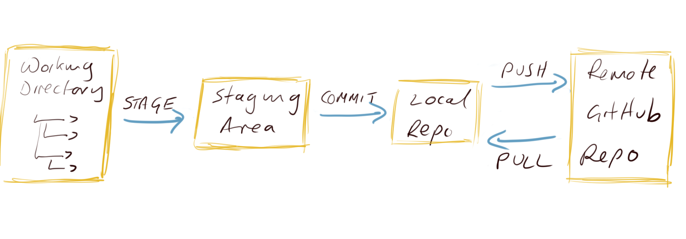
OK, let’s go through an example to help clarify this workflow. In RStudio open up the first_repo.Rproj you created previously during Option 1. Either use the File -> Open Project menu or click on the top right project icon and select the appropriate project.
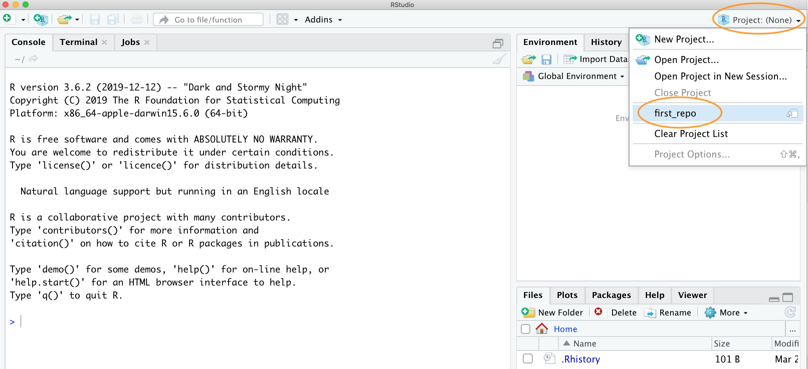
Create an R markdown document inside this project by clicking on the File -> New File -> R markdown menu (remember from the R markdown Chapter?).
Once created, we can delete all the example R markdown code (except the YAML header) as usual and write some interesting R markdown text and include a plot. We’ll use the inbuilt cars dataset to do this. Save this file (cmd + s for Mac or ctrl + s in Windows). Your R markdown document should look something like the following (it doesn’t matter if it’s not exactly the same).

Take a look at the ‘Git’ tab which should list your new R markdown document (first_doc.Rmd in this example) along with first_repo.Rproj, and .gitignore (you created these files previously when following Option 1).

Following our workflow, we now need to stage these files. To do this tick the boxes under the ‘Staged’ column for all files. Notice that there is a status icon next to the box which gives you an indication of how the files were changed. In our case all of the files are to be added (capital A) as we have just created them.

After you have staged the files the next step is to commit the files. This is done by clicking on the ‘Commit’ button.
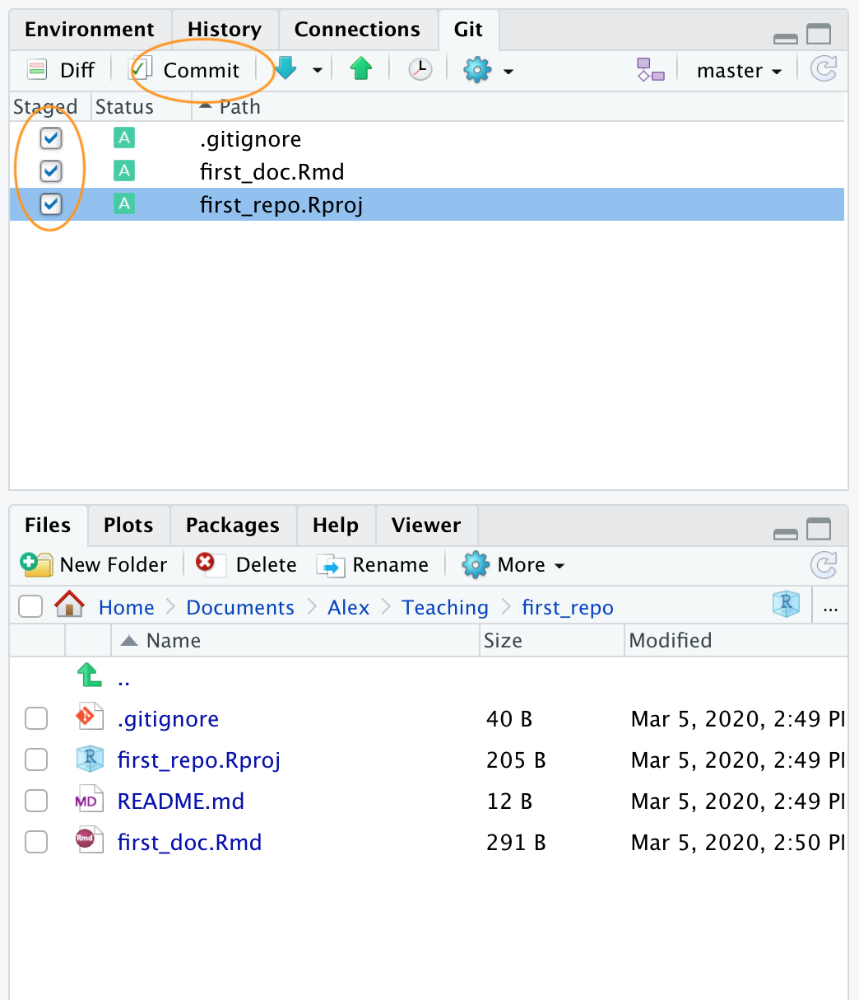
After clicking on the ‘Commit’ button you will be taken to the ‘Review Changes’ window. You should see the three files you staged from the previous step in the left pane. If you click on the file name first_doc.Rmd you will see the changes you have made to this file highlighted in the bottom pane. Any content that you have added is highlighted in green and deleted content is highlighted in red. As you have only just created this file, all the content is highlighted in green. To commit these files (take a snapshot) first enter a mandatory commit message in the ‘Commit message’ box. This message should be relatively short and informative (to you and your collaborators) and indicate why you made the changes, not what you changed. This makes sense as Git keeps track of what has changed and so it is best not to use commit messages for this purpose. It’s traditional to enter the message ‘First commit’ (or ‘Initial commit’) when you commit files for the first time. Now click on the ‘Commit’ button to commit these changes.
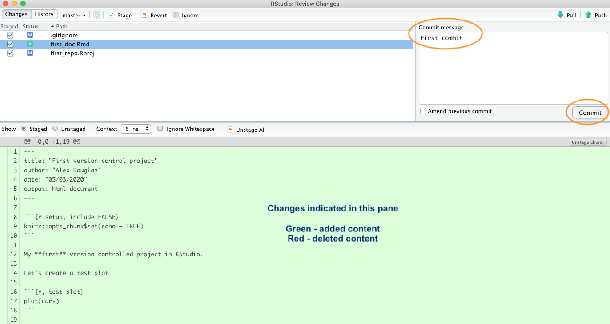
A summary of the commit you just performed will be shown. Now click on the ‘Close’ button to return to the ‘Review Changes’ window. Note that the staged files have now been removed.

Now that you have committed your changes the next step is to push these changes to GitHub. Before you push your changes it’s good practice to first pull any changes from GitHub. This is especially important if both you and your collaborators are working on the same files as it keeps you local copy up to date and avoids any potential conflicts. In this case your repository will already be up to date but it’s a good habit to get into. To do this, click on the ‘Pull’ button on the top right of the ‘Review Changes’ window. Once you have pulled any changes click on the green ‘Push’ button to push your changes. You will see a summary of the push you just performed. Hit the ‘Close’ button and then close the ‘Review Changes’ window.

To confirm the changes you made to the project have been pushed to GitHub, open your GitHub page, click on the Repositories link and then click on the first_repo repository. You should see four files listed including the first_doc.Rmd you just pushed. Along side the file name you will see your last commit message (‘First commit’ in this case) and when you made the last commit.

To see the contents of the file click on the first_doc.Rmd file name.

8.6.1 Tracking changes
After following the steps outlined above, you will have successfully modified an RStudio project by creating a new R markdown document, staged and then committed these changes and finally pushed the changes to your GitHub repository. Now let’s make some further changes to your R markdown file and follow the workflow once again but this time we ’ll take a look at how to identify changes made to files, examine the commit history and how to restore to a previous version of the document.
In RStudio open up the first_repo.Rproj file you created previously (if not already open) then open the first_doc.Rmd file (click on the file name in the Files tab in RStudio).
Let’s make some changes to this document. Delete the line beginning with ‘My first version controlled …’ and replace it with something more informative (see figure below). We will also change the plotted symbols to red and give the plot axes labels. Lastly, let’s add a summary table of the dataframe using the kable() and summary() functions (you may need to install the knitr package if you haven’t done so previously to use the kable() function) and finally render this document to pdf by changing the YAML option to output: pdf_document.
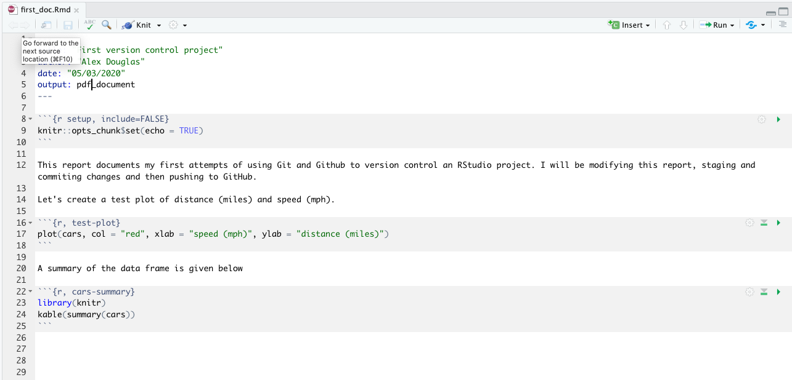
Now save these changes and then click the knit button to render to pdf. A new pdf file named first_doc.pdf will be created which you can view by clicking on the file name in the Files tab in RStudio.
Notice that these two files have been added to the Git tab in RStudio. The status icons indicate that the first_doc.Rmd file has been modified (capital M) and the first_doc.pdf file is currently untracked (question mark).
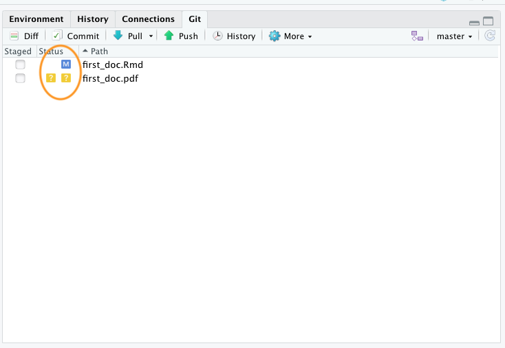
To stage these files tick the ‘Staged’ box for each file and click on the ‘Commit’ button to take you to the ‘Review Changes’ window

Before you commit your changes notice the status of first_doc.pdf has changed from untracked to added (A). You can view the changes you have made to the first_doc.Rmd by clicking on the file name in the top left pane which will provide you with a useful summary of the changes in the bottom pane (technically called diffs). Lines that have been deleted are highlighted in red and lines that have been added are highlighted in green (note that from Git’s point of view, a modification to a line is actually two operations: the removal of the original line followed by the creation of a new line). Once you’re happy, commit these changes by writing a suitable commit message and click on the ‘Commit’ button.
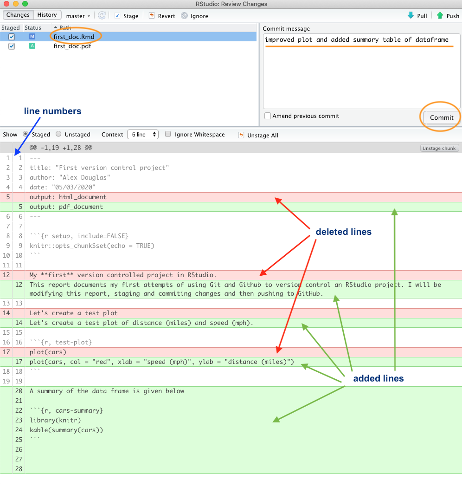
To push the changes to GitHub, click on the ‘Pull’ button first (remember this is good practice even though you are only collaborating with yourself at the moment) and then click on the ‘Push’ button. Go to your online GitHub repository and you will see your new commits, including the first_doc.pdf file you created when you rendered your R markdown document.

To view the changes in first_doc.Rmd click on the file name for this file.

8.6.2 Commit history
One of the great things about Git and GitHub is that you can view the history of all the commits you have made along with the associated commit messages. You can do this locally using RStudio (or the Git command line) or if you have pushed your commits to GitHub you can check them out on the GitHub website.
To view your commit history in RStudio click on the ‘History’ button (the one that looks like a clock) in the Git pane to bring up the history view in the ‘Review Changes’ window. You can also click on the ‘Commit’ or ‘Diff’ buttons which takes you to the same window (you just need to additionally click on the ‘History’ button in the ‘Review Changes’ window).

The history window is split into two parts. The top pane lists every commit you have made in this repository (with associated commit messages) starting with the most recent one at the top and oldest at the bottom. You can click on each of these commits and the bottom pane shows you the changes you have made along with a summary of the Date the commit was made, Author of the commit and the commit message (Subject). There is also a unique identifier for the commit (SHA - Secure Hash Algorithm) and a Parent SHA which identifies the previous commit. These SHA identifiers are really important as you can use them to view and revert to previous versions of files (details below). You can also view the contents of each file by clicking on the ‘View file @ SHA key` link (in our case ’View file @ 2b4693d1’).
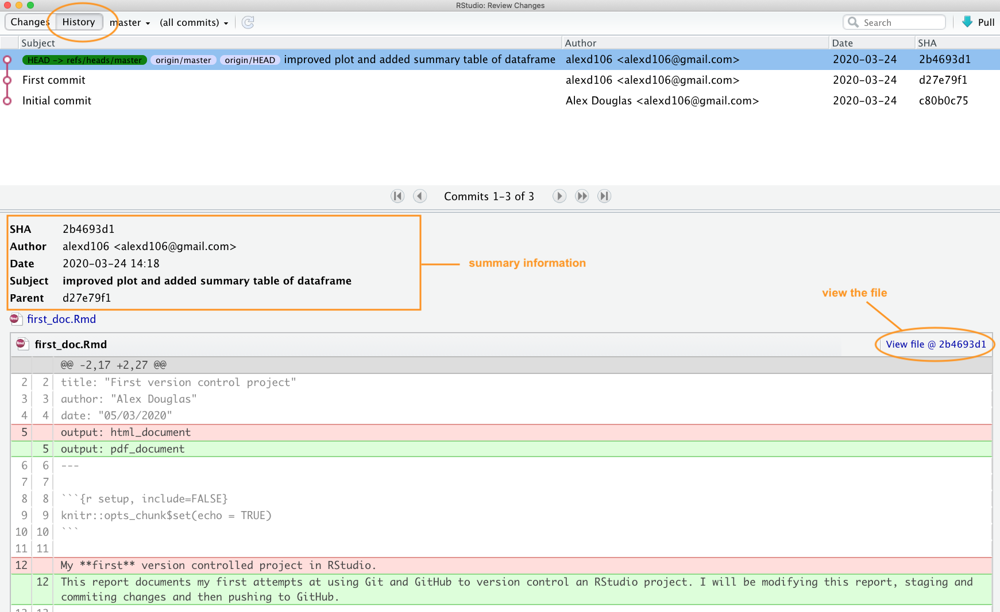
You can also view your commit history on GitHub website but this will be limited to only those commits you have already pushed to GitHub. To view the commit history navigate to the repository and click on the ‘commits’ link (in our case the link will be labelled ‘3 commits’ as we have made 3 commits).
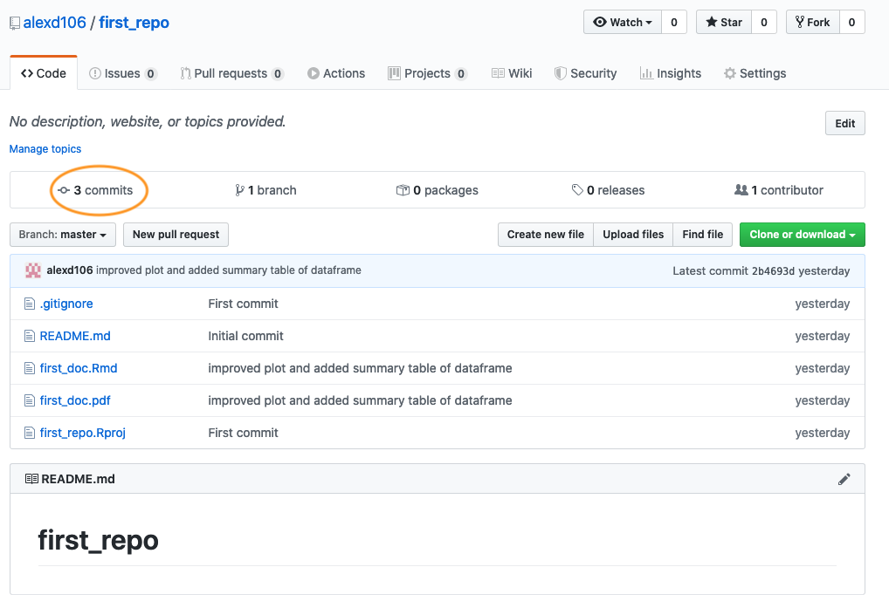
You will see a list of all the commits you have made, along with commit messages, date of commit and the SHA identifier (these are the same SHA identifiers you saw in the RStudio history). You can even browse the repository at a particular point in time by clicking on the <> link. To view the changes in files associated with the commit simply click on the relevant commit link in the list.

Which will display changes using the usual format of green for additions and red for deletions.
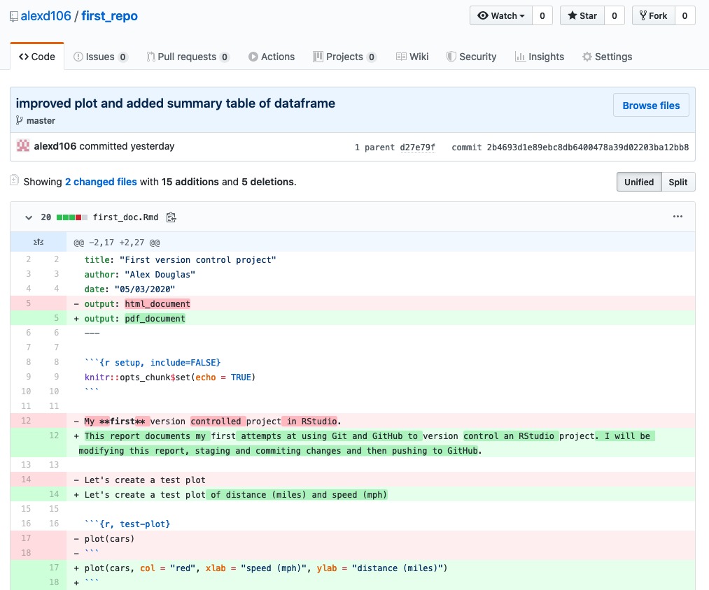
8.6.3 Reverting changes
One the great things about using Git is that you are able to revert to previous versions of files if you’ve made a mistake, broke something or just prefer and earlier approach. How you do this will depend on whether the changes you want to discard have been staged, committed or pushed to GitHub. We’ll go through some common scenarios below mostly using RStudio but occasionally we will need to resort to using the Terminal (still in RStudio though).
Changes saved but not staged, committed or pushed
If you have saved changes to your file(s) but not staged, committed or pushed these files to GitHub you can right click on the offending file in the Git pane and select ‘Revert …’. This will roll back all of the changes you have made to the same state as your last commit. Just be aware that you cannot undo this operation so use with caution.
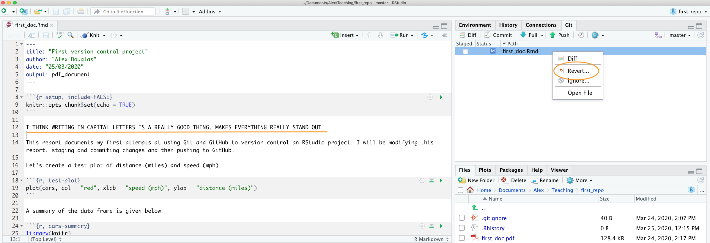
You can also undo changes to just part of a file by opening up the ‘Diff’ window (click on the ‘Diff’ button in the Git pane). Select the line you wish to discard by double clicking on the line and then click on the ‘Discard line’ button. In a similar fashion you can discard chunks of code by clicking on the ‘Discard chunk’ button.

Staged but not committed and not pushed
If you have staged your files, but not committed them then simply unstage them by clicking on the ‘Staged’ check box in the Git pane (or in the ‘Review Changes’ window) to remove the tick. You can then revert all or parts of the file as described in the section above.
Staged and committed but not pushed
If you have made a mistake or have forgotten to include a file in your last commit which you have not yet pushed to GitHub, you can just fix your mistake, save your changes, and then amend your previous commit. You can do this by staging your file and then tick the ‘Amend previous commit` box in the ’Review Changes’ window before committing.
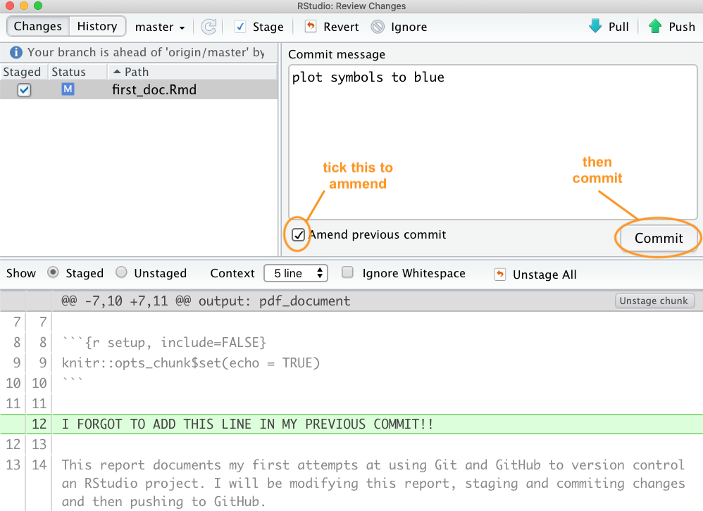
If we check out our commit history you can see that our latest commit contains both changes to the file rather than having two separate commits. I use the amend commit approach alot but it’s important to understand that you should not do this if you have already pushed your last commit to GitHub as you are effectively rewriting history and all sorts bad things may happen!

If you spot a mistake that has happened multiple commits back or you just want to revert to a previous version of a document you have a number of options.
Option 1 - (probably the easiest but very unGit - but like, whatever!) is to look in your commit history in RStudio, find the commit that you would like to go back to and click on the ‘View file @’ button to show the file contents.
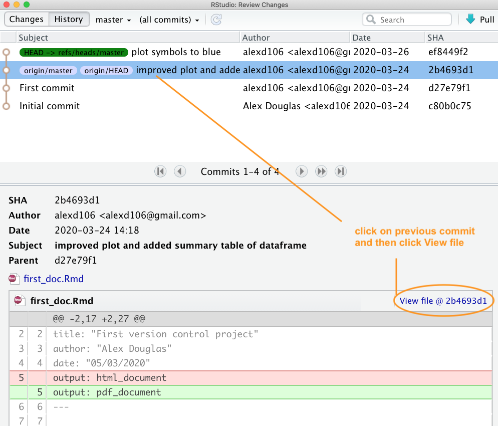
You can then copy the contents of the file to the clipboard and paste it into your current file to replace your duff code or text. Alternatively, you can click on the ‘Save As’ button and save the file with a different file name. Once you have saved your new file you can delete your current unwanted file and then carry on working on your new file. Don’t forget to stage and commit this new file.
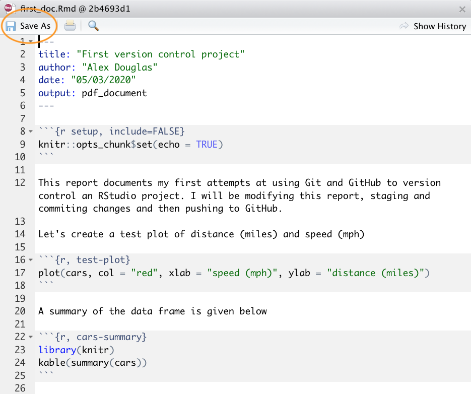
Option 2 - (Git like) Go to your Git history, find the commit you would like to roll back to and write down (or copy) its SHA identifier.
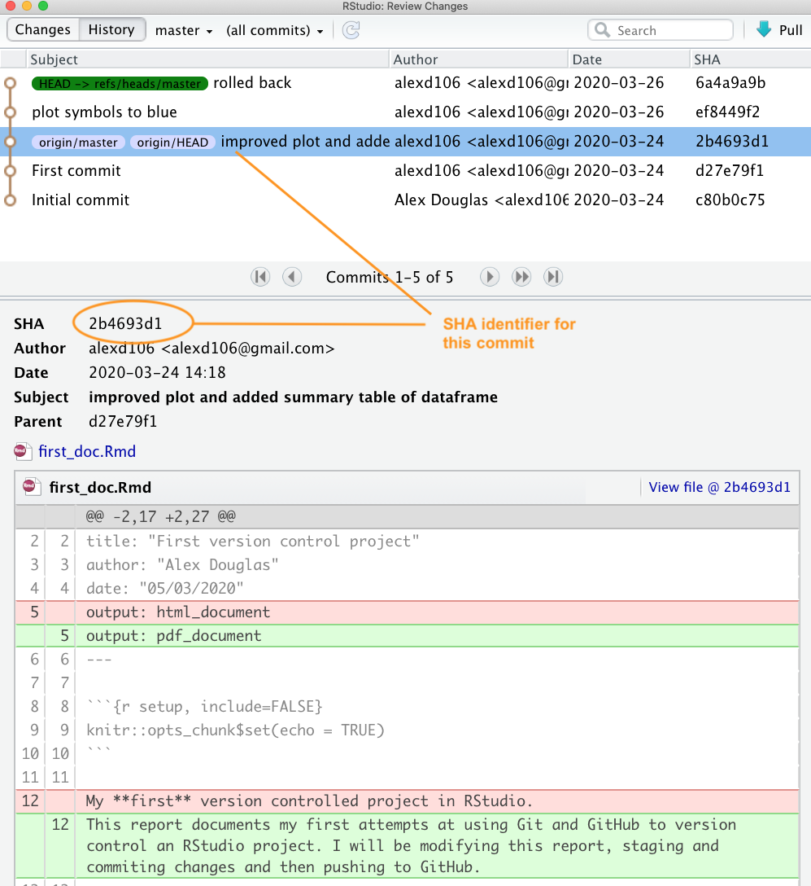
Now go to the Terminal in RStudio and type git checkout <SHA> <filename>. In our case the SHA key is 2b4693d1 and the filename is first_doc.Rmd so our command would look like this:
git checkout 2b4693d1 first_doc.RmdThe command above will copy the selected file version from the past and place it into the present. RStudio may ask you whether you want to reload the file as it now changed - select yes. You will also need to stage and commit the file as usual.
If you want to revert all your files to the same state as a previous commit rather than just one file you can use (the single ‘dot’ . is important otherwise your HEAD will detach!):
git rm -r .
git checkout 2b4693d1 .
Note that this will delete all files that you have created since you made this commit so be careful!
Staged, committed and pushed
If you have already pushed your commits to GitHub you can use the git checkout strategy described above and then commit and push to update GitHub (although this is not really considered ‘best’ practice). Another approach would be to use git revert (Note: as far as I can tell git revert is not the same as the ‘Revert’ option in RStudio). The revert command in Git essentially creates a new commit based on a previous commit and therefore preserves all of your commit history. To rollback to a previous state (commit) you first need to identify the SHA for the commit you wish to go back to (as we did above) and then use the revert command in the Terminal. Let’s say we want to revert back to our ‘First commit’ which has a SHA identifier d27e79f1.
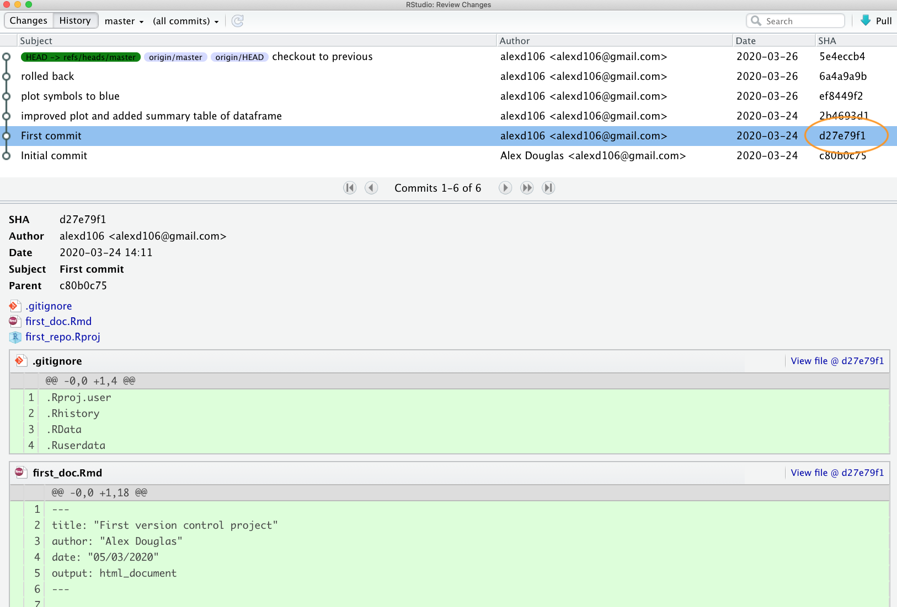
We can use the revert command as shown below in the Terminal. The --no-commit option is used to prevent us from having to deal with each intermediate commit.
git revert --no-commit d27e79f1..HEADYour first_doc.Rmd file will now revert back to the same state as it was when you did your ‘First commit’. Notice also that the first_doc.pdf file has been deleted as this wasn’t present when we made our first commit. You can now stage and commit these files with a new commit message and finally push them to GitHub. Notice that if we look at our commit history all of the commits we have made are still present.
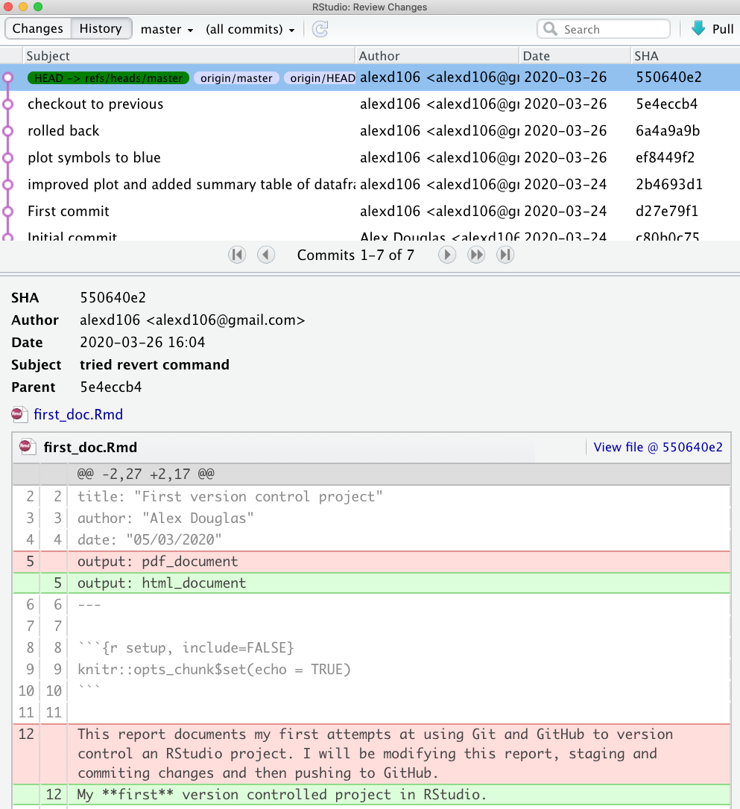
and our repo on GitHub also reflects these changes
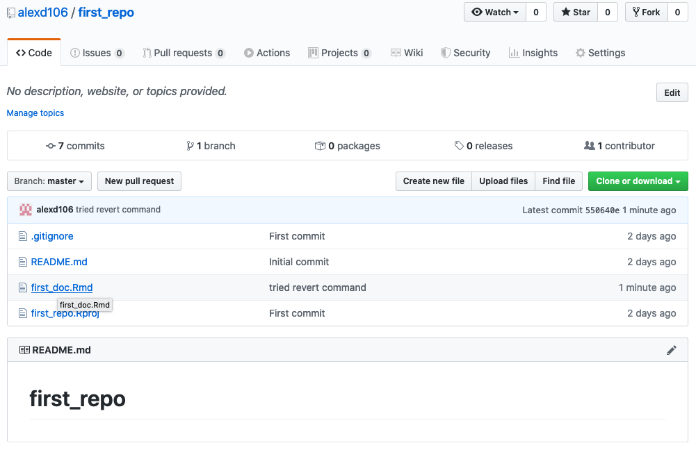
8.6.4 Collaborate with Git
GitHub is a great tool for collaboration, it can seem scary and complicated at first, but it is worth investing some time to learn how it works. What makes GitHub so good for collaboration is that it is a distributed system, which means that every collaborator works on their own copy of the project and changes are then merged together in the remote repository. There are two main ways you can set up a collaborative project on GitHub. One is the workflow we went through above, where everybody connects their local repository to the same remote one; this system works well with small projects where different people mainly work on different aspects of the project but can quickly become unwieldy if many people are collaborating and are working on the same files (merge misery!). The second approach consists of every collaborator creating a copy (or fork) of the main repository, which becomes their remote repository. Every collaborator then needs to send a request (a pull request) to the owner of the main repository to incorporate any changes into the main repository and this includes a review process before the changes are integrated. More detail of these topics can be found in the Further resources section.
8.6.5 Git tips
Generally speaking you should commit often (including amended commits) but push much less often. This makes collaboration easier and also makes the process of reverting to previous versions of documents much more straight forward. I generally only push changes to GitHub when I’m happy for my collaborators (or the rest of the world) to see my work. However, this is entirely up to you and depends on the project (and who you are working with) and what your priorities are when using Git.
If you don’t want to track a file in your repository (maybe they are too large or transient files) you can get Git to ignore the file by right clicking on the filename in the Git pane and selecting ‘Ignore…’
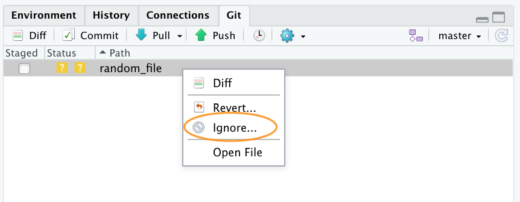
This will add the filename to the .gitignore file. If you want to ignore multiple files or a particular type of file you can also include wildcards in the .gitignore file. For example to ignore all png files you can include the expression *.png in your .gitignore file and save.
If it all goes pear shaped and you end up completely trashing your Git repository don’t despair (we’ve all been there!). As long as your GitHub repository is good, all you need to do is delete the offending project directory on your computer, create a new RStudio project and link this with your remote GitHub repository using Option 2. Once you have cloned the remote repository you should be good to go.